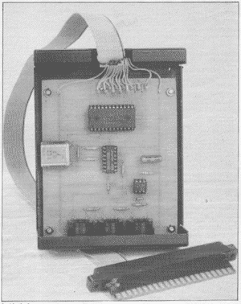
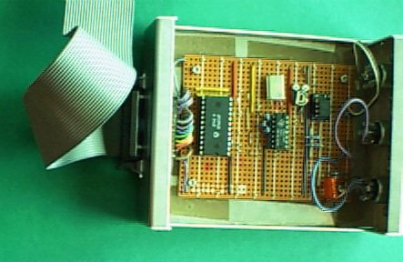

The following article appeared in "Electronics" the Maplin magazine.I will also add my own comments and photographs of the completed unit,and tips about problems I encountered whilst building it.
by LD. Ball
The System
MIDI is
the acronym for Musical Instrument Digital Interface, MIDI is
now the universal standard for connecting and controlling electronic musical
instruments.
Originally, synthesisers were controlled using two signals 'gate' and 'CV',
the 'CV' signal is simply a DC voltage corresponding to the pitch of the
note, a change of 1v would give a change in pitch of one octave. The 'gate'
signal is used to control the sample and hold circuitry, ie. it gates the
control voltage. It is also used to trigger the
envelope
generator. This system suited monophonic analogue synthesisers but
is not really practical for modern polyphonic digital synthesisers.
Fortunately,synthesiser manufacturers adopted a single standard, this system
was developed by Roland in conjunction with other manufacturers. MIDI was
the result.
The outline of MIDI is that all synthesisers and drum machines (or any other
MIDI compatible device) use the same set of codes to initiate and stop
notes. If certain information does not apply to a particular machine (i.e.
velocity information on a non-velocity sensitive synthesiser) it is ignored.
The system outline may seem limited at first, but special functions exclusive
to a particular manufacturer or machine are incorporated using special
'system exclusive' codes to indicate a non-standard function.
To allow easy connection between devices, a serial system is used. Operation
is similar to RS423, except that MIDI uses a current rather than voltage
loop, however the main difference is speed; most serial systems have a maximum
speed of 9600 BAUD. MIDI uses an incredible 3125 kiloBAUD!
The system runs at this speed to avoid apparent gaps between simultaneous
events. The data word format is 8 bits, 1 stop bit and no parity.
A full implementation of MIDI utilises three sockets on the equipment. These
are MIDI IN, MIDI OUT and MIDI THRU. MIDI IN is the serial data into the
equipment. MIDI OUT is the serial data from the equipment. MIDI THRU is a
buffered version of the data that appears at MIDI IN. The connection between
equipment is similar to the way that Commodore printers and disk drives may
be chained together.
To prevent possible hum and earth loop problems all MIDI inputs are Opto
Isolated. Connection between equipment is usually via 5 pin 180o
DIN leads (with some equipment intended for use 'on the road' XLR connectors
may be found), only two cores and screen are used on 5 pin leads though.
Ready made MIDI leads can be purchased or leads may be made up using good
quality screened cable and connectors. MIDI leads should not be longer than
50 metres.
What
can MIDI be used for?
MIDI Modes
MIDI Data Messages
NOTE ON
The follow:ng sequence of data will initiate a note. Exchange consists of
a three byte transfer.
BYTE 1 Channel No. (0 to 15) and NOTE ON command.
BYTE 2 Key No. (0 to 127) 0=lowest, 127-highest. MID 'C' = 60.
BYTE 3 Key Velocity; how hard key is pressed, (0 to 127) 0=no velocity,
127=max velocity. Non-velocity keyboards use 64.
NOTE OFF
The following sequence of data will stop a note. Exchange consists of a three
byte transfer.
BYTE 1 Channel No. and NOTE OFF command.
BYTE 2 Key No.
BYTE 3 Key Release Velocity; how quickly key is released, (0 to 127).
POLYPHONIC KEY PRESSURE (AFTERTOUCH)
Some keyboards also respond to the pressure applied to the key after the
key has been pressed .Exchange consists of a three byte transfer.
BYTE 1 Channel No. and KEY PRESSURE command.
BYTE 2 Key No.
BYTE 3 Key Pressure (0 to 127) 0=no pressure, 127= max pressure.
OVERALL PRESSURE (AFTERTOUCH)
Similar to above, but is the overall pressure of all the notes down. Exchange
consists of a two byte transfer.
BYTE 1 Channel No. and OVERALL PRESSURE command.
BYTE 2 Overall Pressure (0 to 127) 0=no pressure, 127 = max pressure.
CONTROLLERS
These are used to transmit information corresponding to operation of such
things as portamento, damper and operation of modulation wheels or joysticks.
This means, for example, that when the damper is operated on the master,
it is also operated on the slave.
There are two main types of controller command:
CONTINUOUS - these correspond to turning a pot on the control panel
or operating a modulation wheel, ie. anything that needs to have a continuous
value corresponding to position, to be transmitted.
ON/OFF - these correspond to switch operations such as the damper
pedal being pressed. For the different types of controllers a set of sub-channels
or controller numbers are used:
Controller messages consist of a three byte transfer.
BYTE 1 Channel No. and CONTROLLER message.
BYTE 2 Controller No. (0 to 127).
BYTE 3 Controller Value (0 to 127) 0=full off, 127=full on.
PITCH BEND
Pitch bend is considered such an important controller it is assigned as a
separate message. Pitch bend is a three byte transfer.
BYTE 1 Channel No. and PITCH BEND command.
BYTE 2 Pitch Bend value (0 to 127) LSB.
BYTE 3 Pitch Bend value (0 to 127) MSB.
PROGRAM CHANGE This enables program or patches corresponding to different
sounds to be selected, this is a two byte transfer.
BYTE 1 Channel No. and PROGRAM CHANGE command.
BYTE 2 Program No. (0 to 127).
MODE MESSAGES
This group of messages affect the modes of operation and are under the class
of controllers.
LOCAL/REMOTE
This is used for selecting whether note data for voices within the synth
is obtained from the keyboard and MIDI or just MIDI. In the second option,
operation of the keyboard just sends out MIDI data. This option is useful
for adding such features as arpeggiation, auto chording or other MIDI effects
and is achieved by using a MIDI effects box or micro computer.
ALL NOTES OFF
Causes all notes on that channel to cease sounding. This command should be
used with some care as not all devices respond to it.
OMNI/POLY/MONO SELECT
This allows selection of the channel and note assignment mode as
previously.
SYSTEM EXCLUSIVE (*) This allows totally non-standard information
to be exchanged between compatible equipment. Such as data for a particular
patch or even data for a sampled sound. The exclusive message was provided
for manufacturers different needs and is one facility that means MIDI cannot
become obsolete. The exclusive message is a multi byte transfer and the length
depends on the application.
BYTE 1 SYSTEM EXCLUSIVE Command.
BYTE 2 MANUFACTURERS ID No.
BYTE 3 .........'data'
BYTE n ........'data'
BYTE n+1 END OF EXCHANGE Command.
SYSTEM RESET (*)
Puts all the equipment into the reset state, as if it had just been powered
up. There are many other messages but only the main ones have been covered
here. NB (*) = Any 'SYSTEM message that is transmitted, is received on all
channels.
MIDI Requirements
INTERFACE HARDWARE
Data rate 31.25 K BAUD ±1%, Asynchronous.
1 start bit, 8 data bits, 1 stop bit.
Total 10 bits, one complete word takes 320ms to
transmit.
Circuit operates using 5mA current loop.
The receiver must be opto-isolated. Opto isolator must require less than
5mA to turn on.
MESSAGES
i) Channel messages
The status byte contains a four bit number corresponding to the MIDI channel
required (1 to 16); the number transmitted is 0 to 15 (00002 to
11112)
ii) System messages
These are not given a channel number and are received on all channels.
COMMON - for all devices connected.
REAL TIME - for timing and synchronisation purposes.
EXCLUSIVE - manufacturers exclusive data exchange.
Block Diagram
Figure 1 centres around the 6850 Universal Asynchronous Receiver
Transmitter; this device is used to convert parallel data from the computer
to serial MIDI data and also to convert serial MiDI data to parallel data
for the computer.
The data from the 6850 UART is not suitable to directly drive a MIDI device.
The data has to be buffered to drive the MIDI bus. The buffer has quite a
low output impedance so as to prevent problems caused by induced noise or
a low cable capacitance. The output is current limited to protect the equipment.
As previously mentioned, MIDI inputs need to be Opto Isolated, this gives
added safety and prevents troublesome (and annoying) hum loops from being
formed through cables and equipment. After data is passed through the Opto
Isolator it follows two routes; into the 6850 UART and via an inverter into
another buffer (duplicate of MIDI OUT buffer) to provide MIDI THRU data.The
data rate is derived from a 2Mhz crystal oscillator, this is subsequently
divided by 64 in the 6850 to give the 31.25 K BAUD data rate used in
the MIDI system. Connection to the computer data bus is via the tri-state
buffers in the 6850, data transfer is controlled by read/write, enable and
select signals. Register selection is achieved by using read/write and register
select lines.
Circuit Description
In Figure 2, IC1a, IC1b, R1, R2, R3 and Xl form a conventional
two inverter crystal oscillator which runs at 2MHz. The output of which is
fed to IC2's transmit and receive clock inputs, the 31.25KHz data clock is
obtained by an internal divide by 64 circuit in 1C2. In the interface, IC2
does most of the work; parallel/serial and serial/parallel conversion, as
well as interfacing to the computer expansion bus. Bus control is achieved
using 'E' (enable) and 'R/W' (read/write). The E line is normally connected
to the processors
'Æ2' (phase 2)
system clock.
Data transfer takes place when the
Æ2 line is high.
The R/W line controls the data direction. With R/W high data is read from
the 6850's registers and with R/W low data is written to the 6850's registers.
Since the 6850 has two pairs of registers, a selection signal is required,
this is the 'RS' (register select) line, and is connected to the least
significant bit of the address bus. Data is exchanged via 8 bi-directional
lines (D0-D7), when IC2 is de-selected D0-D7 are in the tri-state mode. To
insert the 6850 into the computer's memory map, 3 select lines are provided;
two active high (CS0 and CS1) and one active low (CS2), these lines may have
to be fed from a separate address decoder if suitable memory map decode lines
are not available on the computer.
Serial data transmitted from the 6850 is not suitable to directly drive the
MIDI bus, so it has to be buffered. This is achieved using IC1f, since this
is an inverting buffer, the data has to be first inverted using IC1e. By
taking the MIDI output from between the +5V line and IC1f, IC1f is sinking
rather than sourcing current. R8 and R9 limit the maximum current that can
be drawn under possible fault conditions, protecting the computer, interface
and MIDI device.
IC1f forms the MIDI OUT buffer. Data received drives the LED half of OPTO1.
R5 serves to limit current and D1 affords reverse bias protection for the
LED. When the LED turns on, the transistor half of OPTO1 is biased on, and
pulls the input to IC1c and the receive data input of IC2, low. When the
LED is off, the transistor is also off, the input to IC1c and the receive
data input of IC2 are pulled high via R4. IC1c, IC1d, R6 and R7 form the
MIDI THRU buffer, operation is identical to the MIDI OUT buffer except that
data is obtained from the opto isolator instead of the transmit data output
of IC2.
6850 UART Registers
Table 1 shows the registers contents on all 8 data lines. Table 2 shows the
reset and divide settings in the Control register and Table 3 gives the various
settings required for various word formats. Bit D7 of the Control register
is the Receive Interrupt Enable bit and if bit D7 is set, an interrupt will
be generated when RX Register Full bit goes high. If bit D7 is not set, receive
interrupts are disabled. To RESET 6850 UART; set bits D0 and Dl to 1(i.e.
decimal 3). To ENABLE 6850 UART; set bit D0 to 0, bit D1 to 1, bit
D2 t0 1, bit D3 to 0, bit D4 to 1 (i.e. decimal 22). (This corresponds
to Divide by 64 and 8 bits, No Parity, 1 Stop Bit). To TRANSMIT data; check
that the TX Register Empty bit, D1; Control Register) is high,if not wait
until bit D1 is high,then place transmit data into bits D0-D7 of TX Register.
To RECEIVE data; check that the RX Register Full bit, D0; Control Register)
is high, if not wait until D0 is high, then retrieve data from bits D0-D7
of RX Register.
| Data Bus | Addr+1 (TX) Transmit |
Addr+2 (RX) Receive |
Addr+0 (WR) Control |
Addr+0 (RD) Status |
| D0 | Data Bit 0 | Data Bit 0 | CK divide | RX reg full |
| D1 | Data Bit 1 | Data Bit 1 | CK divide | TX reg empty |
| D2 | Data Bit 2 | Data Bit 2 | Word Form | *not used* |
| D3 | Data Bit 3 | Data Bit 3 | Word Form | *not used* |
| D4 | Data Bit 4 | Data Bit 4 | Word Form | Framing err |
| D5 | Data Bit 5 | Data Bit 5 | (TX cntrl) | RX overrun |
| D6 | Data Bit 6 | Data Bit 6 | (TX cntrl) | Parity err |
| D7 | Data Bit 7 | Data Bit 7 | (INT en) | (INT requ) |
Table 1.Register Contents |
||||
| Function | D0 | D1 | D2 | D3 | D4 | D5 | D6 | D7 | Decimal Value |
| Reset | 1 | 1 | * | * | * | * | * | * | 3 |
| Divide by 64 | 0 | 1 | * | * | * | * | * | * | 2 |
| Divide by 16 | 1 | 0 | * | * | * | * | * | * | 1 |
| Divide by 1 | 0 | 0 | * | * | * | * | * | * | 0 |
Table 2.Control Register (Reset and Divide) |
|||||||||
| Word Format | D0 | D1 | D2 | D3 | D4 | D5 | D6 | D7 | Decimal Value |
| 7 bits,even parity,2 stop bits | * | * | 0 | 0 | 0 | * | * | * | 0 |
| 7 bits,odd parity,2 stop bits | * | * | 1 | 0 | 0 | * | * | * | 4 |
| 7 bits,even parity,1 stop bit | * | * | 0 | 1 | 0 | * | * | * | 8 |
| 7 bits,odd parity,1 stop bit | * | * | 1 | 1 | 0 | * | * | * | 12 |
| 8 bits,no parity,2 stop bits | * | * | 0 | 0 | 1 | * | * | * | 16 |
| 8 bits,no parity,1 stop bit | * | * | 1 | 0 | 1 | * | * | * | 20 |
| 8 bits,even parity,1 stop bit | * | * | 0 | 1 | 1 | * | * | * | 24 |
| 8 bits,odd parity,1 stop bit | * | * | 1 | 1 | 1 | * | * | * | 28 |
Table 3.Control Register (Word Format) |
|||||||||
| Base Address | (read) | Status Register |
||
| Base Address | (write) | Control Register |
||
| Base Address+1 | (read) | Receive Data Register |
||
| Base Address+1 | (write) | Transmit Data Register |
||
VIC-20 |
CBM-64 |
|||
(dec) |
(hex) |
(dec) |
(hex) |
|
| Base Address = | 39936 | $9C00 | 57088 | $DF00 |
| Base Address+1 = | 39937 | $9C01 | 57089 | $DF01 |
| The base address is the position in memory where the 6850 has been placed. | ||||
Table 4. Register Memory Map |
||||
(Viewed looking INTO expansion slot) |
|||||||||||||||||||||||||||||||||||||||||||||||||||||||||||||||||||||
TOP |
BOTTOM |
||||||||||||||||||||||||||||||||||||||||||||||||||||||||||||||||||||
| A GND | L BLK 3 | A GND | L CA10 | ||||||||||||||||||||||||||||||||||||||||||||||||||||||||||||||||||
| B CD0 | M BLK 5 | B CA0 | M CA11 | ||||||||||||||||||||||||||||||||||||||||||||||||||||||||||||||||||
| C CD1 | N RAM 1 | C CA1 | N CA12 | ||||||||||||||||||||||||||||||||||||||||||||||||||||||||||||||||||
| D CD2 | O RAM 2 | D CA2 | O CA13 | ||||||||||||||||||||||||||||||||||||||||||||||||||||||||||||||||||
| E CD3 | P RAM3 | E CA3 | P I/O 2 | ||||||||||||||||||||||||||||||||||||||||||||||||||||||||||||||||||
| F CD4 | Q V R/W | F CA4 | Q I/O 3 | ||||||||||||||||||||||||||||||||||||||||||||||||||||||||||||||||||
| G CD5 | R C R/W | G CA5 | R S0 2 | ||||||||||||||||||||||||||||||||||||||||||||||||||||||||||||||||||
| H CD6 | S IRQ | H CA6 | S NMI | ||||||||||||||||||||||||||||||||||||||||||||||||||||||||||||||||||
| I CD7 | T nc | I CA7 | T RESET | ||||||||||||||||||||||||||||||||||||||||||||||||||||||||||||||||||
| J BLK1 | U +5v | J CA8 | U nc | ||||||||||||||||||||||||||||||||||||||||||||||||||||||||||||||||||
| K BLK2 | V GND | K CA9 | V GND | ||||||||||||||||||||||||||||||||||||||||||||||||||||||||||||||||||
Figure 3. VIC20 Edge Connector |
|||||||||||||||||||||||||||||||||||||||||||||||||||||||||||||||||||||
(Viewed looking INTO expansion slot) |
|||||||||||||||||||||||||||||||||||||||||||||||||||||||||||||||||||||
TOP |
BOTTOM |
||||||||||||||||||||||||||||||||||||||||||||||||||||||||||||||||||||
| A GND | L ROM L | A GND | L A10 | ||||||||||||||||||||||||||||||||||||||||||||||||||||||||||||||||||
| B D0 | M I/O 2 | B A0 | M A11 | ||||||||||||||||||||||||||||||||||||||||||||||||||||||||||||||||||
| C D1 | N EXROM | C A1 | N A12 | ||||||||||||||||||||||||||||||||||||||||||||||||||||||||||||||||||
| D D2 | O GAME | D A2 | O A13 | ||||||||||||||||||||||||||||||||||||||||||||||||||||||||||||||||||
| E D3 | P I/O 1 | E A3 | P A14 | ||||||||||||||||||||||||||||||||||||||||||||||||||||||||||||||||||
| F D4 | Q Dot Clock | F A4 | Q A15 | ||||||||||||||||||||||||||||||||||||||||||||||||||||||||||||||||||
| G D5 | R R/W | G A5 | R S0 2 | ||||||||||||||||||||||||||||||||||||||||||||||||||||||||||||||||||
| H D6 | S IRQ | H A6 | S NMI | ||||||||||||||||||||||||||||||||||||||||||||||||||||||||||||||||||
| I D7 | T +5v | I A7 | T RESET | ||||||||||||||||||||||||||||||||||||||||||||||||||||||||||||||||||
| J DMA | U +5v | J A8 | U ROMH | ||||||||||||||||||||||||||||||||||||||||||||||||||||||||||||||||||
| K BA | V GND | K A9 | V GND | ||||||||||||||||||||||||||||||||||||||||||||||||||||||||||||||||||
Figure 4. Commodore 64 Edge Connector |
|||||||||||||||||||||||||||||||||||||||||||||||||||||||||||||||||||||
| MIDI circuit | VIC 20 | CBM 64 |
| 0v | GND | GND |
| D0 | CD0 | D0 |
| D1 | CD1 | D1 |
| D2 | CD2 | D2 |
| D3 | CD3 | D3 |
| D4 | CD4 | D4 |
| D5 | CD5 | D5 |
| D6 | CD6 | D6 |
| D7 | CD7 | D7 |
| R/W | C R/W | R/W |
| R/S | CA 0 | A0 |
| E | S0 2 | S0 2 |
| CS2 | I/O 3 | I/O 2 |
| +5v | +5v | +5v |
| Note the CS0 and CS1 lines should be tied to 5v as only CS2 is used. | ||
Table 5. |
||
MIDI Interface Software Writing
Sequencing can be accomplished from BASIC quite easily. All that is required
is that the appropriate data be output to the 6850 in the correct order.
This data may be stored in an array or in data statements.
For recording or processing of MIDI data received, it is really necessary
to use machine language, either entirely or using subroutines which can be
called from BASIC; this should not be too much of a problem to anyone who
has an understanding of assembly language, however guidelines will be given.
Before the 6850 is used it has to be RESET and the CLOCK DIVISION rate set.
This is achieved by writing decimal 3 -then decimal 22 to the control register
of the 6850.
Data being exchanged between devices is passed through the TX and RX data
registers. To achieve correct data transfer, the STATUS register must be
checked; i.e. that the TRANSMIT DATA REGISTER is empty before sending more
data; TDRE bit of STATUS REGISTER will be high when it is OK to send more
data, and similarly for receiving data; data must be present in the RECEIVE
DATA REGISTER before it can be read; RDRF bit of STATUS REGISTER will be
high when it is OK to read the data.
The Registers will be configured in the computers memory map as shown in
Table 4; the actual locations will depend on the machine and the address
decoding used, but addresses for the VIC 20 and the Commodore 64 are shown.
Figures 3 and 4 show the pin functions of VIC 20 and Commodore 64 edge connectors
respectively, and Table 5 shows connections from the two edge connectors
to the circuit.
To illustrate how simple the software can be, a few examples are shown in
Listings 1 to 5, these show how to RESET the 6850 and READ and WRITE data,
examples are given in both BASIC and 6502 assembly code. In the examples:
'base' means base address, 'base+ 1' means base address+ 1 location, 'data'
means either variable or memory location containing data.
Please note that BASIC should not be used to directly get data from the 6850
since BASIC is slow. However BASIC may be used to send data without problem.
If data needs to be fetched in BASIC, a machine language subroutine must
be used.
Table 6 is intended as a guide to what data should be sent and in what order.
Table 7 gives Controller assignments and Table 8 describes Mode
Messages.
First Byte |
Second Byte |
Third Byte |
Description |
| 1001 mmmm | 0nnn nnnn | 0vvv vvvv | NOTE ON (Velocity 0=note off) [1] |
| 1000 mmmm | 0nnn nnnn | 0vvv vvvv | NOTE OFF [1] |
| 1010 mmmm | 0nnn nnnn | 0ppp pppp | POLYPHONIC KEY PRESSURE (Aftertouch) [2] |
| 1101 mmmm | 0ppp pppp | ---- ---- | OVERALL KEY PRESSURE (Aftertouch) [2] |
| 1011 mmmm | 0ccc cccc | 0ddd dddd | CONTROLLER CHANGE [3] |
| 1110 mmmm | 0ddd dddd | 0ddd dddd | PITCH BEND [4] |
| 1100 mmmm | 0PPP PPPP | ---- ---- | PROGRAM CHANGE [5] |
| 1001 0000 | 0iii iiii | 0*** **** | SYSTEM EXCLUSIVE [6] |
| 1001 0111 | ---- ---- | ---- ---- | EOX (End of exchange) [7] |
| 1111 1111 | ---- ---- | ---- ---- | SYSTEM RESET |
Key |
|||
mmmm |
= |
MIDI channel No. (0 to 15) | |
0nnn nnnn |
= |
NOTE on keyboard (0 to 127) | |
0vvv vvvv |
= |
VELOCITY (0 to 127) | |
0ppp pppp |
= |
PRESSURE (0 to 127) | |
| 0ccc cccc | = |
CONTROLLER No. (0 to 127) | |
| 0PPP PPPP | = |
PROGRAM No. (0 to 127) | |
| 0ddd dddd | = |
DATA (0 to 127) | |
| 0iii iiii | = |
ID Code (0 to 127) | |
| 0*** **** | = |
Undefined number of data bytes (as 0ddd dddd) | |
Notes |
|||
| [1] | 0nnn nnnn | = |
60 is middle 'C' |
| 0vvv vvvv | = |
0=off,1=ppp,64=between mp and mf,127=fff | |
| 0vvv vvvv | = |
64 in non velocity sensitive devices | |
| [2] | 0ppp pppp | = |
0 = no pressure,127 = max pressure |
| [3] | 0ccc cccc | = |
controller number,see list |
| [4] | 0ddd dddd | = |
data for controller |
| 0ddd dddd | = |
2nd byte=LSB,3rd byte = MSB, 2nd byte=0,3rd byte=64 gives no bend |
|
| [5] | 0PPP PPPP | = |
program or patch number |
| [6] | 0iii iiii | = |
manufacturers ID code |
| [7] | 0*** **** | = |
undefined number of data bytes,terminate by sending
[7], use to return to normal.Use after EXCLUSIVE data exchange |
Table 6. |
|||
Controller assignment |
|
Controller no. |
Description |
| 0 | Continuous controller 0 MSB |
| 1 | Modulation wheel MSB |
| 2 to 31 | Continuous controllers 2 to 31 MSB |
| 32 | Continuous controller 0 LSB |
| 33 | Modulation wheel LSB |
| 34 to 63 | Continuous controllers 2 to 31 LSB |
| 64 to 95 | Switch controllers |
| 96 to 121 | ** undefined ** |
| 122 to 127 | MODE MESSAGES (see Table 8) |
| Controller data | |
| For continuous controllers 0 to 127 (min to max) For switch controllers 0 = off,127 = on.For continuous controllers; if only 7 bits of resolution,send only MSB. If full resolution is required send MSB first,then LSB. If only LSB has changed in value,LSB can be sent without MSB. |
|
Table 7. |
|
Mode Messages |
||
Controller no. |
Description | Data |
| 122 | Local Control | 0 = off,127 = on |
| 123 | All notes off | 0 |
| 124 | Omni off (all notes off) | 0 |
| 125 | Omni on (all notes off) | 0 |
| 126 | Mono on [poly off] (all notes off) | number of channels |
| 127 | Poly on [mono off] (all notes off) | 0 |
| Note | ||
| All messages which can be sent successively (e.g.
NOTE ON) under the same STATUS byte, can be sent without STATUS byte until a different STATUS is required. |
||
Table 8. |
||
MIDI INTERFACE PARTS LIST |
||
| RESISTORS | All 0.6w 1% | Metal Film |
| R1,3 | 2k2 | 2 (M2K2) |
| R2,5,6,7,8,9 | 220W | 6 (M220R) |
| R4 | 10k* | 1(M10K) |
| * I suggest a 2k7 instead | ||
| CAPACITORS | ||
| C1 | 100nF Poly | 1 (BX76H) |
| SEMICONDUCTORS | ||
| IC1 | 74LS04 | 1(YF04E) |
| IC2 | MC6850P | 1(WQ48C) |
| D1 | 1N4148 | 1(QL80B) |
| OPTO1 | OPTO-ISOLATOR | 1(RA57M) |
| MISCELLANEOUS | ||
| X1 | 2MhZ CRYSTAL | 1(FY80B) |
| SK1-3 | PC DIN SKT 5 PIN "A" | 3(YX91Y) |
| 24-PIN DIL SKT | 1(BL20W) | |
| 14-PIN DIL SKT | 1(BL18U) | |
| BOX AB10 | 1(LF11M) | |
6502 Machine Code and Basic programs
Example1
10 REM**RESET6850**
20 POKE 'base',3
30 REM **SET DIVIDE RATE & WORD FORMAT**
40 POKE 'base',22
Example2
@reset:
LDA#$03 load acc with hex 03
STA$'base' store acc at 'base'
LDA#$16 load acc with hex l6
STA$'base' store acc at 'base'
RTS return from subroutine
Example3
@getdata:
LDA$'base' load acc with STATUS
AND#$01 AND with bit 0
CMP#$01 test
BNE$@ getdata branch if no data
LDA$'base+1' get data
STA$'data' store acc at 'data'
RTS return from subroutine
Example4
10 REM **IS TX REG EMPTY?**
20 IF (PEEK('base') AND 2)=0 THEN 20
30 REM **SEND DATA to 6850**
40 POKE'base+1','data'
Example5
@ send data :
LDA$'base' load acc with STATUS
AND#$02 AND with bit 1
CMP#$02 test
BNE$@ send branch if not ready
data
LDA$'data' get data to send
STA$'base+1' send data
RTS return from subroutine
VIC-20 MIDI interface photos |
|||
| Interfaces and cartridge connector | Inside interface 1 | Breadboard circuit and DIN connectors | Rear IDC connector |
|  | |||
| IDC VIC Cartridge connector | Cable connection to interface | In/Out and Thru DIN connectors | Interface2,showing I/O switch & 2nd connector |
Using the above article I managed to create two separate interfaces. One with MIDI In/Out/Thru and one with only MIDI In/Out. The second I made switchable onto either the same or different address block as the first,thus enabling both interfaces to either operate simultaneously or independently from other PEEK/POKE addresses. The major problem with connecting these interfaces is the edge connector required to connect them to the VICs cartridge port. Rather than have to get hold of the required PCB edge connector,I opted to cannibalise a VIC cartridge and connect all the required lines to another type of readily available connector,making it easier to plug the interfaces into the VIC.
(Viewed from rear of connector) |
||||||||||||||||||||||||||||||||||||||||
| 1 - Data Bit 0 | 14 - GND | |||||||||||||||||||||||||||||||||||||||
| 2 - Data Bit 1 | 15 - nc | |||||||||||||||||||||||||||||||||||||||
| 3 - Data Bit 2 | 16 - nc | |||||||||||||||||||||||||||||||||||||||
| 4 - Data Bit 3 | 17 - nc | |||||||||||||||||||||||||||||||||||||||
| 5 - Data Bit 4 | 18 - nc | |||||||||||||||||||||||||||||||||||||||
| 6 - Data Bit 5 | 19 - nc | |||||||||||||||||||||||||||||||||||||||
| 7 - Data Bit 6 | 20 - nc | |||||||||||||||||||||||||||||||||||||||
| 8 - Data Bit 7 | 21 - nc | |||||||||||||||||||||||||||||||||||||||
| 9 - Chip Select (I/O2)* | 22 - nc | |||||||||||||||||||||||||||||||||||||||
| 10 - Enable | 23 - nc | |||||||||||||||||||||||||||||||||||||||
| 11 - Read/Write | 24 - nc | |||||||||||||||||||||||||||||||||||||||
| 12 - Register Select | 25 - nc | |||||||||||||||||||||||||||||||||||||||
| 13 - Chip Select (I/O3) | 26 - 5v | |||||||||||||||||||||||||||||||||||||||
| 26 Way Connector layout (* this line was added for Interface2 to allow "piggy backing") | ||||||||||||||||||||||||||||||||||||||||
I used the above arrangement to connect the 26 way connector to the VIC cartridge - I later used the remaining pin (no.9) on the top row to connect the extra I/O 2 line which enabled me to make the second interface switchable between 39936 as a base address and 38912 - thus enabling the two interfaces to be "piggy-backed" or to be separately accessed on independent I/O port addresses - that is - with the addition of ONE more piece of wire in the cable connections TWO interfaces can be run independently - this makes for a rather complex set-up - but is still just as easy to program in either 6502 or BASIC. The switch was a simple "one or the other" type - as shown in Pic024.
Alternatively,it is possible to put a 26 way connector directly into the VIC casing - rather than cannibalise a cartridge - this of course ruins the VIC case - and it is difficult to lock down the connector to the case - but there is plenty of room in the case for a connector and once there,it's just a matter of wiring directly to the VIC PCB.
Note that BASIC is not fast enough to cope with INPUT data - but data can
be transmitted reasonably to the MIDI out without any recourse to 6502 machine
code.
The original article uses a printed circuit to solder the components too.
I opted to use breadboard and design the circuit around that. I also found
that making R4 variable made adjustments that seemed necessary to the input
signal possible,as on first trial the signal did not seem to get to the MIDI
in. I suggest replacing the 10K resistor with a 2k7.Wiring
to the cannibalised cartridge was also a stumbling point,since some of the
solder joints had to be made very close to the actual gold contact.
The whole thing is not costly,most of the price being taken up by the UART,and maybe the case,all the other components being relatively cheap.
NOTE that it is possible to make a MIDI-thru box by using the circuit diagram IN and THRU sections and duplicating the THRU section - this requires only the use of the Opto-Isolator and the Inverter 74LS04.I did exactly this - and it will just run on the same PSU as my PSS480 (or a 9v battery - I made it switchable) - but this is not advised as it is 4volts over what the 74LS04 SHOULD run on - however mine has never broken down and continues to send THRU signals to all 3 outputs.It is advisable however to add a 1k resistor between the 9v supply and the power pin of the 74LS04,which will make the voltage within tolerance.
Ebay
Review of VIC/64
Data Sheet Archive
Digital Electronic
Logic
Breadboarding Digital
Circuits
History of
Electronics
WINVICE - Vic20/PC Emulation
XM1541 cables
World of Fairlight
Scott Adams
My Synths
MIDI Guitar Project
{kind=link}
{kind=link}
{kind=link}
{kind=link}
{kind=link}
{kind=link}
{kind=link}
{kind=link}